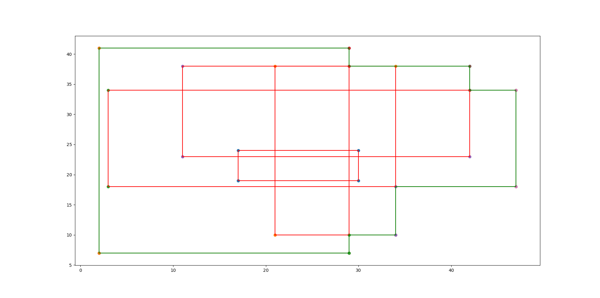

Input 9
5
17 19
30 24
21 10
34 38
3 18
47 34
2 7
29 41
11 23
42 38
Output 9
Measure = 1298
Number of Contour Lines = 12
Contour Line Segments:-
2 7 29 7
29 10 34 10
34 18 47 18
42 34 47 34
29 38 42 38
2 41 29 41
2 7 2 41
29 7 29 10
29 38 29 41
34 10 34 18
42 34 42 38
47 18 47 34
Contour Length = 168
